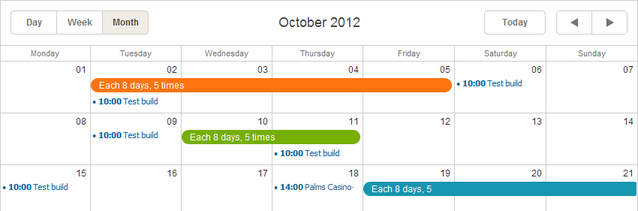
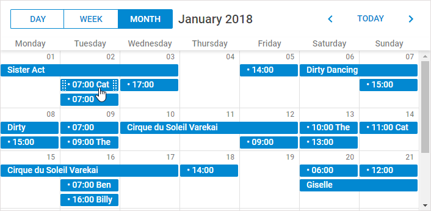

The Month view displays a single month of the calendar.

The Month view is added to the basic scheduler's markup by default. That's why you don't need to provide any extra code for adding the view to the scheduler.
//just usual initialization. The Month view will be added by default
scheduler.init('scheduler_here',new Date(2019,0,10),"month");
...
scheduler.load("/data/events");
Related sample: Basic initialization
To remove the Month view tab from the scheduler, remove the related div from the scheduler's markup:
//remove this div to remove the Month tab
<div class="dhx_cal_tab" name="month_tab" style="right:204px;"></div>
By default, the scheduler lengthens the cell's height to display all assigned events.
Starting from version 4.0, you have the possibility to control the number of events,displayable in a cell, and thereby the maximum height of cells.
To set the maximum number of events in a cell, use the max_month_events option:
scheduler.config.max_month_events = 3;
..
scheduler.init('scheduler_here', new Date(2019,5,30),"month");
If the number of assigned events exceeds the option's value, the scheduler will display the 'View more' link. The link will redirect the user to the Day view, where he or she can see a full list of assigned events.
Related sample: 'View more' link in the Month view
To hide some days in the scale, e.g. leave just work days and remove holidays, use the ignore_month() method.
The method is a function that takes the cell date as a parameter. To hide a certain day, return true for it.
// 0 refers to Sunday, 6 - to Saturday
scheduler.ignore_month = function(date){
if (date.getDay() == 6 || date.getDay() == 0) //hides Saturdays and Sundays
return true;
};
Related sample: Hiding week days in the scale of Month view
Days' numbers in the Month view can be presented as clickable links that open the related day in the specified view.
To display days in the view's cells as clickable links:
<script src="../codebase/ext/dhtmlxscheduler_active_links.js"></script>//the user will be skipped to the Week view after clicking on a day link
scheduler.config.active_link_view = "week";
...
scheduler.init('scheduler_here',new Date(2012,7,6),"month");
Related sample: Month days as links
By default, users can't resize events in the Month view by drag-n-drop (only through the edit form).
To provide resizing of multi-day events by drag-n-drop, set the resize_month_events property to true:
//resizing multi-day events by drag-n-drop
scheduler.config.resize_month_events = true;
scheduler.init('scheduler_here',new Date(2019,0,10),"month");
Related sample: Resizable events in Month view
To provide resizing both multi- and single-day events by drag-n-drop, set the resize_month_timed property to true as well:
//resizing both single- and multi-day events by drag-n-drop
scheduler.config.resize_month_events = true;scheduler.config.resize_month_timed= true; scheduler.init('scheduler_here',new Date(2019,0,10),"month");
Please, note:
